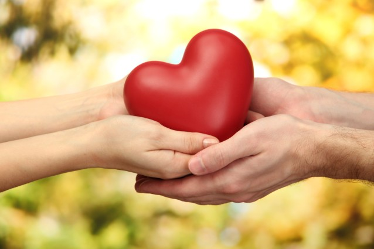

What is CBB?
"Community Blood Bank (CBB) is a non-profit blood bank based on the community to provide
a blood supply for all patients who are in need in Waterford County. CBB is affiliated to the Health Service Executive in Ireland
and it constitutes the largest group of blood providers and collectors.
CBB covers a wide area of Waterford Hospitals and Medical Centres; generous volunteers come from all over Waterford to donate their bloods."

LatestNews